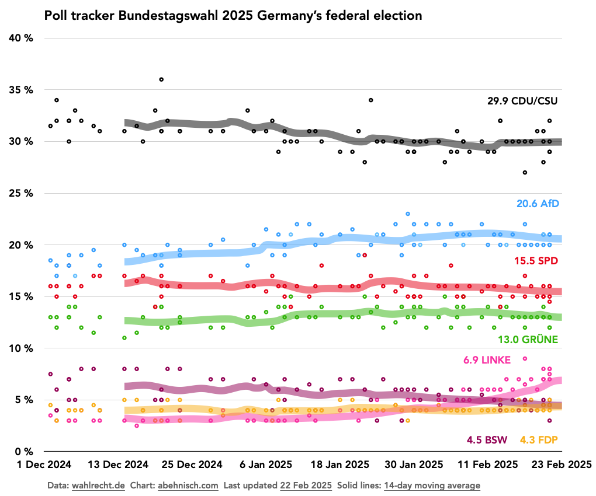
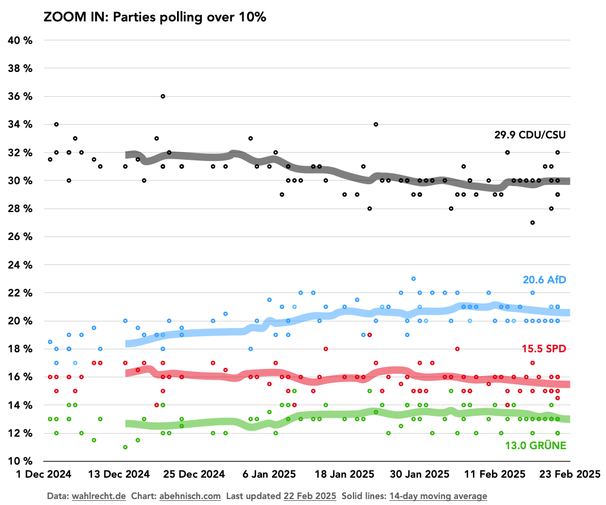
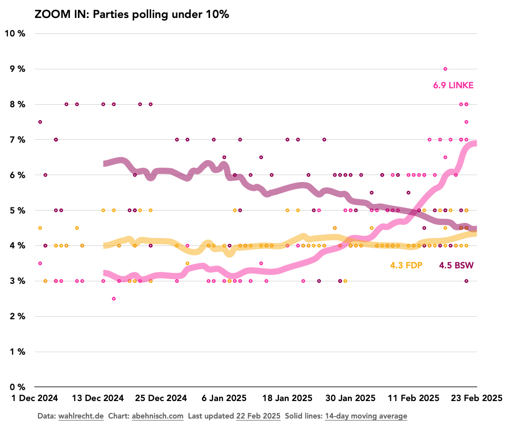

Opinion poll tracker Bundestagswahl 2025 Germany’s federal election
Germany is electing a new parliament on 23 February 2025, and thanks to the wonderful wahlrecht.de website it’s easy to track all the major opinion polls.
The chart below plots all data points for each party from the 9 polling providers (Allensbach, Forsa, FG Wahlen, GMS, Infratest, INSA, Ipsos, Verian, YouGov).
The solid line calculates a 14-day moving average of all the data points within that time span for each party.
To zoom in for more details, the next two charts separate the four “big” parties and the three “small” parties, polling under 10%.
 The latest 14-day averages are summarised below.
Parties need to get over 5% of the national vote to gain seats in the Bundestag, unless they can win 3 electoral districts outright.
In 2025, the Bundestag will have a maximum of 630 seats, allocated by the Sainte-Laguë/Schepers method. (Don’t ask. It’s complicated.)
The pie chart below shows the seats projected based on the latest 14-day trend figures.
Right now, the most likely outcome of this election is that CDU/CSU and SPD will enter into coalition talks.
Notice how the Linke overtook the BSW in recent weeks, maybe the biggest surprise of this campaign so far.
¶